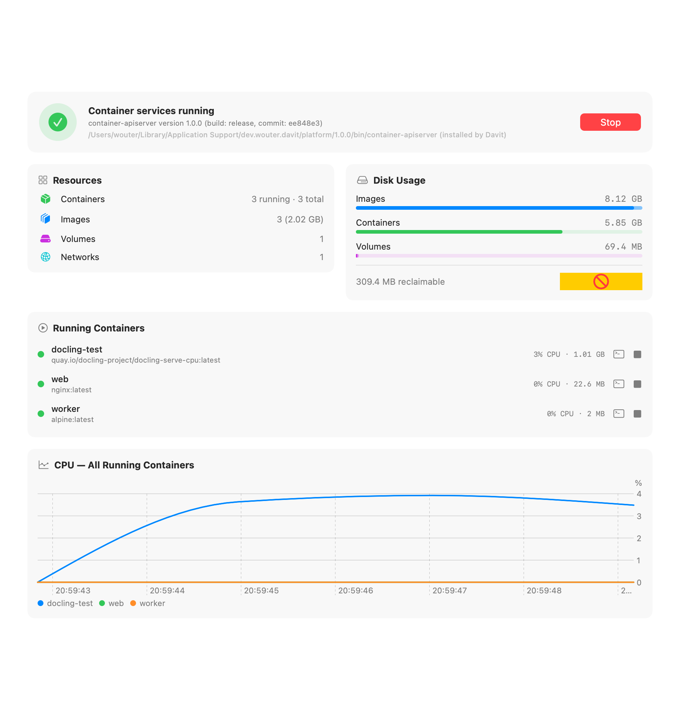
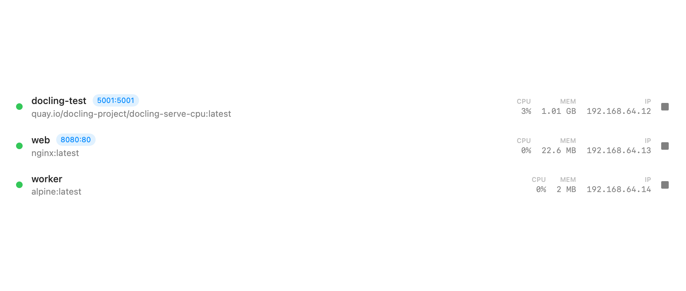
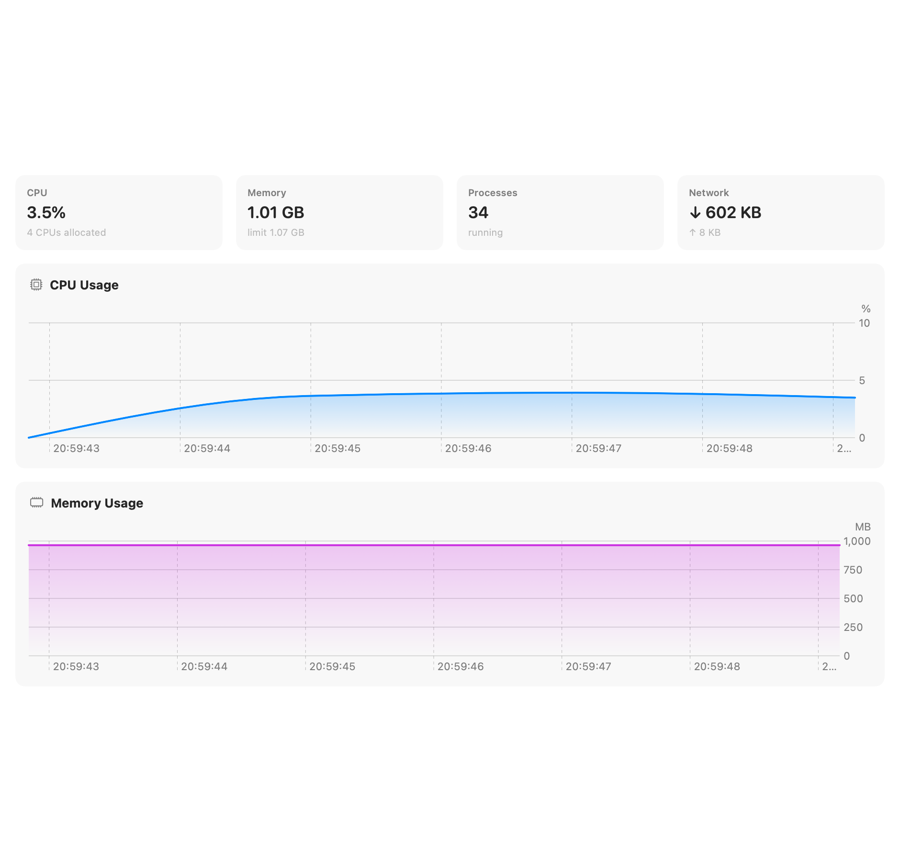
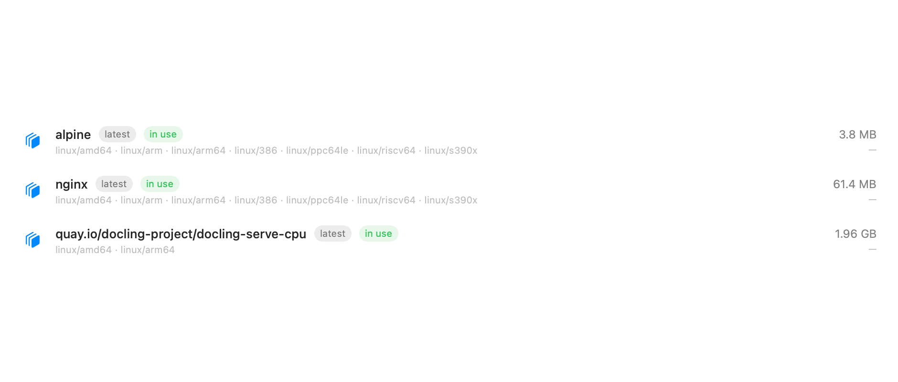

Your containers. Right at home on your Mac.
Less wrangling.
More building.
Meet Davit. A native Mac app for Apple's container platform. Run Linux containers, explore your stack, and get back to what you're making.
100% free Open source MIT licensed
macOS 15+ · Apple Silicon · Signed & notarized
brew install wouterdebie/tap/davit
Fully native SwiftUI
Apple's container engine
No Docker Desktop required
No subscription
LESS FRICTION. MORE FLOW.
Your whole stack.
One native app.
Davit talks directly to Apple's open-source container daemon over XPC; the same wire path the CLI uses. No Electron, no web views, no background agents of its own.
Your containers, at a glance.
Start, stop, restart and delete with live CPU, memory and IP on every row. Streaming logs with follow & boot mode, live stat charts, and raw config inspection.
One-click terminal
Open an interactive shell in any running container, straight into Terminal or iTerm; over the native API, no CLI needed.
Edit & Recreate
Containers are immutable, so Davit prefills a new one from the old config with the image's entrypoint and env subtracted, letting you change ports, env vars, mounts or resources in seconds.
In-container files
Browse any running container's filesystem right in the app: navigate folders, download files to your Mac, upload or delete. All over the native API, no docker cp incantations.
Compose import
Open a docker-compose.yml and Davit shows exactly what it will create: services in dependency order, volumes, networks, the equivalent CLI command per service, and honest warnings for anything unsupported. Then it starts the whole stack in one click.
Build from a Dockerfile
Pick a context folder, set a tag, hit Build. Davit drives Apple's BuildKit builder directly, starting it if needed, and the image lands in your library, ready to run.
Images, volumes, networks
Pull with live progress, run from any image, tag, prune. Create sized volumes and custom subnets. See what's in use before you delete it.
Registry logins
Sign in to Docker Hub, ghcr.io, quay.io or any registry to pull private images. Credentials are verified on the spot and stored in your login keychain, shared with the container CLI, so both see them.
Platform settings, editable
Default CPU/memory for new containers, registry, DNS, builder resources; edited in the app, validated by the platform's own config loader, saved as clean TOML overrides.
A little setup. Then you're building.
No container platform installed? Davit downloads Apple's signed installer, verifies it, and sets everything up in your user Library; no administrator rights needed. It can add the container CLI to your shell, too.
A CLOSER LOOK
Built for the way
you work on a Mac.
Built entirely in SwiftUI. Menu bar quick actions, a Dock icon only when you want one, and live charts that don't spin up a browser to render.





Pick a tab, or swipe the screenshot to explore.
FROM DOWNLOAD TO DEPLOY
A fresh start.
A running stack.
From a fresh install to a running container you can open in your browser. Davit helps set up Apple's platform along the way.
-
Install & open Davit
Grab it from Releases or
brew install wouterdebie/tap/davit. On first launch, if Apple's container platform isn't installed, Davit sets it up for you; no admin password needed. -
Pull a demo image
Click Images → Pull Image and enter a small image that shows something in the browser:
nginxdemos/hello -
Run it with a published port
Hit Run on the image (or Containers → Run Container). Set a port mapping (host
8088→ container80) and run. -
Open it
From the container's Ports row, click Open in Browser (or visit
localhost:8088). You'll see a page served from inside the container, showing its own hostname and address. -
Explore
Open the container to watch live CPU, memory and disk, stream logs, browse and download its files, drop into a terminal, or Edit & Recreate to change ports, env or resources.
A DIFFERENT FOUNDATION
How is this different from Docker Desktop?
- It's Apple's engine. Each container runs in its own lightweight VM via Apple's Virtualization framework; sub-second boots, per-container IP addresses, optimized for Apple silicon.
- OCI all the way. Pulls from Docker Hub, ghcr.io, quay.io or any registry, including private images, with registry logins managed in Settings. Your existing images just work.
- Nothing between you and the daemon. Davit links Apple's own client library and speaks XPC directly; no socket shims, no license agreements, no accounts.
- Small footprint. One 17 MB app bundle; no Electron, no bundled VM image, no background services of its own.
THE DETAILS MATTER
Good to know.
A different engine comes with a few differences. Here's what to expect.
Can it replace Docker Desktop for me?
Honest answer: it depends on how you use Docker. Davit is a UI for Apple's container platform, not a Docker daemon; there is no docker socket and no docker CLI/API compatibility. If your workflow is "docker run, a compose file, the occasional build", Davit covers it today: pull and run with ports/env/mounts/limits, import a docker-compose.yml, build from a Dockerfile, sign in to private registries, browse files, stream logs. If your workflow is scripted against the docker API (testcontainers, tools that expect /var/run/docker.sock, CI scripts shelling out to docker), it can't replace that yet. Your images all work either way; OCI is OCI.
Can I run images I build locally?
Yes. Build them right in the app (Images → Build Image, since 0.1.8), or with the platform's container build; both land in the same image store Davit shows. Images built with Docker live in Docker's separate store; move one over with docker save and container image load.
How much memory does it use?
The honest answer is architectural: there's no always-on multi-gigabyte Linux VM. Docker Desktop keeps one big VM running whether or not you have containers; Apple's platform instead boots a separate lightweight VM per container, sized to that container, and tears it down when the container stops. With nothing running, the platform's background services idle at roughly 25 MB. Davit itself is a native SwiftUI app (no Electron); its footprint is mostly shared macOS framework memory. So the more containers you're not running, the less it costs you.
How does it compare to OrbStack?
Honestly: if OrbStack already works for you, you won't switch for speed; it's excellent, and its shared-VM design is very fast. The engines differ, though. OrbStack is a commercial app with its own Docker-compatible virtualization layer; Davit is a free, open-source UI on Apple's own container platform, which boots a separate lightweight VM per container in well under a second and tears it down when the container stops. What you'd notice in practice: nothing resident when nothing is running, per-container IPs on a bridged network, stronger isolation between containers, and no license or account. What OrbStack still does better: drop-in docker CLI/API compatibility and broader tooling support. Both run standard OCI images.
Can I reach a container by name from my Mac?
Yes. The platform has local DNS domains built in: run sudo container system dns create test once (or use your own domain name), set it as the default domain under Settings → Platform → DNS, and a container named web answers at web.test from your Mac. Every container also gets its own IP (shown in its Network section), so direct access always works. Alternatively, running Avahi inside the guest broadcasts a .local mDNS alias, since containers sit on a bridged network with their own addresses.
Does it work with my docker-compose.yml?
Yes, with a supported subset. Containers → ⋯ → Import Compose File previews the services, volumes, networks and equivalent commands before starting your stack. Davit supports ports, environment files, mounts, resource limits, health checks, profiles and dependency conditions. Unsupported options are listed as warnings up front rather than silently dropped. Apple's platform has no native compose, so Davit orchestrates the stack itself. See the current support details for the full list and command-line workflow.
Can I build images from a Dockerfile?
Yes: Images → Build Image. Davit talks to Apple's BuildKit-based builder directly (and starts it for you if it isn't running): pick the context folder and Dockerfile, set a tag and build args, and the built image lands in your library. One current platform limit worth knowing: Dockerfiles over 16 KiB are rejected (an upstream apple/container bug), and build contexts can't live under /tmp.
Can I pull private images?
Yes. Sign in under Settings → Registries; Docker Hub, ghcr.io, quay.io or any OCI registry. Credentials are verified against the registry before being saved to your login keychain, and they're shared with the container CLI, so a login in Davit works for CLI pulls too (and vice-versa). For Docker Hub, use an access token rather than your password. Registries that use Docker credential helpers (Google Artifact Registry via gcloud, ECR, and friends) work too: if ~/.docker/config.json names a helper for the registry, Davit invokes it right before each pull, so short-lived tokens are always fresh.
Is it signed and safe to run?
Yes. Every release is Developer ID signed and notarized by Apple, so it opens without Gatekeeper warnings. It's open source (MIT); you can read or build it yourself. It talks only to your local container daemon and to GitHub for update checks.
Does Davit phone home?
There is no feature telemetry. Davit connects to your local container platform, the registries you use, and download services when installing or updating software. Current releases use Sparkle to check for updates hosted on GitHub; update archives carry an independent EdDSA signature. Older releases (0.1.33 and earlier) still check davit.app/appcast.json. The current updater is open source: read the code.
Do I need the container CLI installed?
No. Davit talks to the platform directly over XPC. If the platform isn't present, Davit can download and install Apple's signed package for you on first launch; no admin password required. It can optionally add the container CLI to your shell from Settings if you want it.
SMALL APP. ROOM TO BUILD.
Your next project starts here.
Free, open source, and right at home on your Mac.
Download freeApple Silicon · macOS 15+ · No subscription